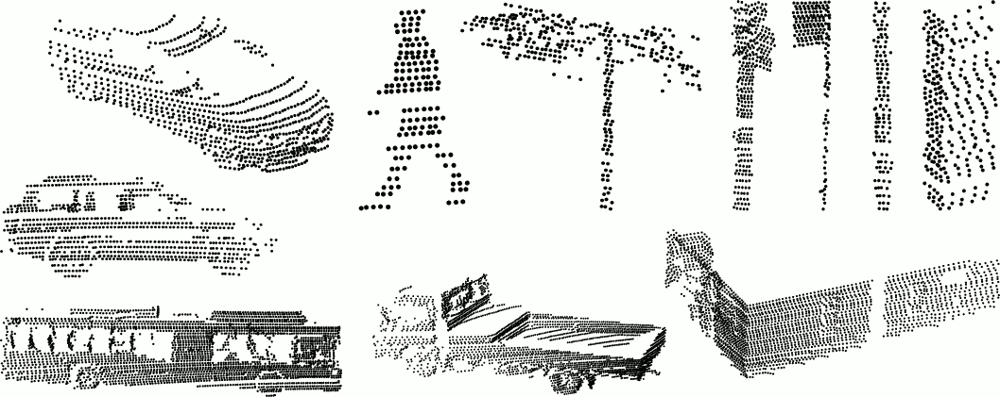
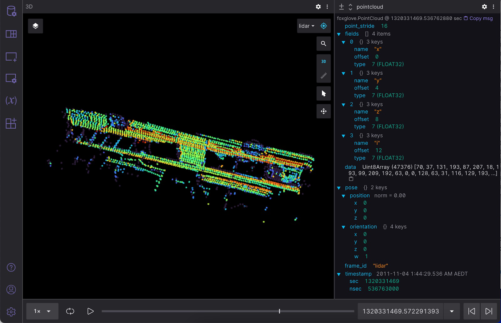

Writing JSON to MCAP
Info
From Recording JSON Data to MCAP Files. While JSON might not be the most efficient format for storing point cloud data, it’s easy to get started with as an MCAP beginner.
Decoding CSV data
Let’s work with some publicly available data – the “Sydney Urban Objects Dataset”, released by the Australian Centre for Field Robotics – and write it as JSON to an MCAP file. 
This CSV dataset contains a variety of common urban road objects scanned with a Velodyne HDL-64E LIDAR. Each of the 600+ scanned object contains the following fields:
t- Timestampintensity- Laser return intensityid- Laser IDx,y,z- 3D point coordinatesazimuth- Horizontal azimuth anglerange- Range of laser returnpid- Point ID of the original scan
Use Python’s built-in csv and datetime libraries to decode this CSV data:
def point_reader(csv_path: typing.Union[str, Path]):
with open(csv_path, "r") as f:
for timestring, i, _, x, y, z, _, _, _ in csv.reader(f):
timestamp = datetime.datetime.strptime(timestring, "%Y%m%dT%H%M%S.%f")
yield (timestamp, float(i), float(x), float(y), float(z))
This prints out the timestamp, intensity, and coordinates for each point in the CSV file you choose to read in.
Encoding the data into a foxglove.PointCloud
Let’s encode this CSV data as a foxglove.PointCloud schema, so we can later visualize this data in Foxglove Studio:
| field | type | description |
|---|---|---|
timestamp |
time | Timestamp of point cloud |
frame_id |
string | Frame of reference |
pose |
Pose | The origin of the point cloud relative to the frame of reference |
point_stride |
uint32 | Number of bytes between points in the data |
fields |
PackedElementField[] | Fields in the data |
data |
bytes | Point data, interpreted using fields |
The foxglove.PointCloud schema expects a data field that contains a single base64-encoded buffer with all point data, as well as a fields field that contains metadata describing how to decode the data.
Since foxglove.PointCloud requires a single timestamp, let’s get it from the first point we see in our file. Then, we’ll pack each field as a four byte single-precision little-endian float.
Let’s start by describing the layout of our data in a foxglove.PointCloud message:
float32 = 7 # as defined in the schema
pointcloud = {
"point_stride": (4 + 4 + 4 + 4), # four bytes per float
"fields": [
{"name": "x", "offset": 0, "type": float32},
{"name": "y", "offset": 4, "type": float32},
{"name": "z", "offset": 8, "type": float32},
{"name": "i", "offset": 12, "type": float32},
],
}
Next, let’s pack the points using Python’s built-in struct and base64 libraries.
points = bytearray()
base_timestamp = None
for point_timestamp, intensity, x, y, z in point_reader(args.csv):
if base_timestamp is None:
base_timestamp = point_timestamp
points.extend(struct.pack("<ffff", x, y, z, intensity))
assert base_timestamp is not None, "found no points in input csv"
pointcloud["data"] = base64.b64encode(points).decode("utf-8")
Each 3D object must exist in its own coordinate frame. A point cloud’s frame_id identifies the coordinate frame it belongs in, and its pose determines its relative position from that coordinate frame’s center. Since we will only have one coordinate frame in our MCAP file, we can choose any arbitrary string as our frame_id, and use the identity pose to place our point cloud in its center.
pointcloud["pose"] = {
"position": {"x": 0, "y": 0, "z": 0},
"orientation": {"x": 0, "y": 0, "z": 0, "w": 1},
}
pointcloud["frame_id"] = "lidar"
We’ll leave the timestamp field for later, when we write the messages into the MCAP file.
Creating a writer
We’ll start with some imports from the Python MCAP library:
from mcap.mcap0.writer import Writer
from mcap.mcap0.well_known import SchemaEncoding, MessageEncoding
Open a file where we’ll output our MCAP data and write our header:
with open(args.output, "wb") as f:
writer = Writer(f)
writer.start("x-jsonschema", library="my-excellent-library") # can use any name, as we are not using an MCAP profile: https://www.google.com/url?q=https://github.com/foxglove/mcap/blob/main/docs/specification/appendix.md%23well-known-profiles&sa=D&source=docs&ust=1658261499762935&usg=AOvVaw2GgwRzJbSlqWOErSFru7L_
Register channel
Let’s create a channel of messages to contain our point cloud. The schema’s name and content tell Foxglove Studio that it can parse and display this message as a point cloud.
with open(Path(__file__).parent / "PointCloud.json", "rb") as f:
schema = f.read()
schema_id = writer.register_schema(
name="foxglove.PointCloud",
encoding=SchemaEncoding.JSONSchema,
data=schema,
)
channel_id = writer.register_channel(
topic="pointcloud",
message_encoding=MessageEncoding.JSON,
schema_id=schema_id,
)
Write messages
Let’s write a single foxglove.PointCloud message on the channel we just created:
pointcloud["timestamp"] = {
"sec": int(base_timestamp.timestamp()),
"nsec": base_timestamp.microsecond * 1000,
}
writer.add_message(
channel_id,
log_time=int(base_timestamp.timestamp() * 1e9),
data=json.dumps(pointcloud).encode("utf-8"),
publish_time=int(base_timestamp.timestamp() * 1e9),
)
Close the MCAP writer to include the summary and footer in your output MCAP file:
writer.finish()
That’s it! We now have a valid MCAP file with a single point cloud message.
Inspect your file
To inspect your MCAP file, install the MCAP CLI tool.
Run the following commands to summarize your file’s contents and to verify that it has no issues:
$ mcap info output.mcap
library: my-excellent-library
profile: x-jsonschema
messages: 1
duration: 0s
start: 2011-11-04T01:36:05.987339008+11:00 (1320330965.987339008)
end: 2011-11-04T01:36:05.987339008+11:00 (1320330965.987339008)
compression:
zstd: [1/1 chunks] (48.09%)
channels:
(1) pointcloud 1 msgs (+Inf Hz) : foxglove.PointCloud [jsonschema]
attachments: 0
$ mcap doctor output.mcap
Examining output.mcap
Visualize your MCAP data
For a more visual representation of this data, let’s use Foxglove Studio. Open either the desktop or web app, and add a Raw Messages and our newly added 3D (Beta) panel to your layout.
Then, simply drag and drop your output MCAP file into the app window to start playing the data. Make sure to enable the pointcloud topic in the 3D (Beta) panel to display the point cloud in 3D space. You can also inspect the raw data for the pointcloud topic in your Raw Messages panel: 